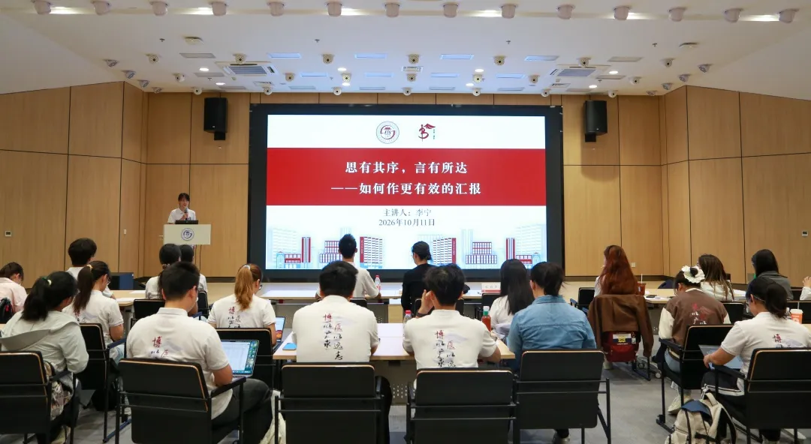
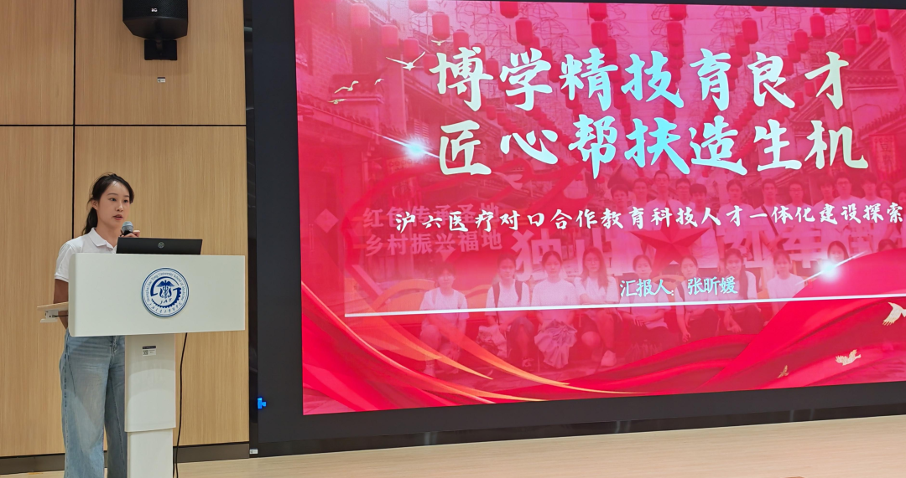
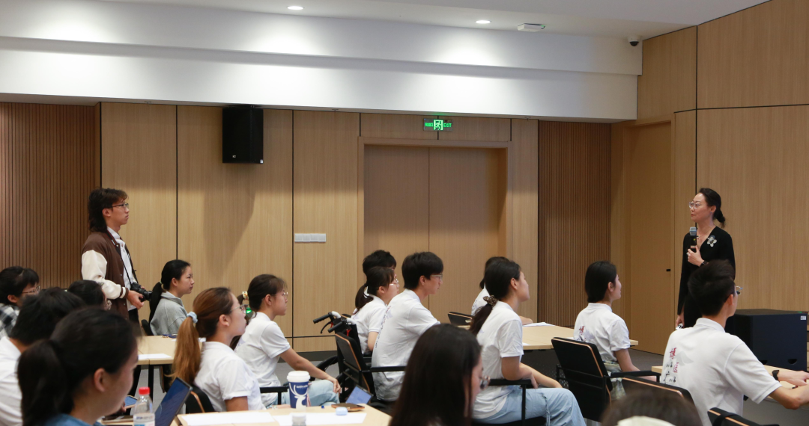
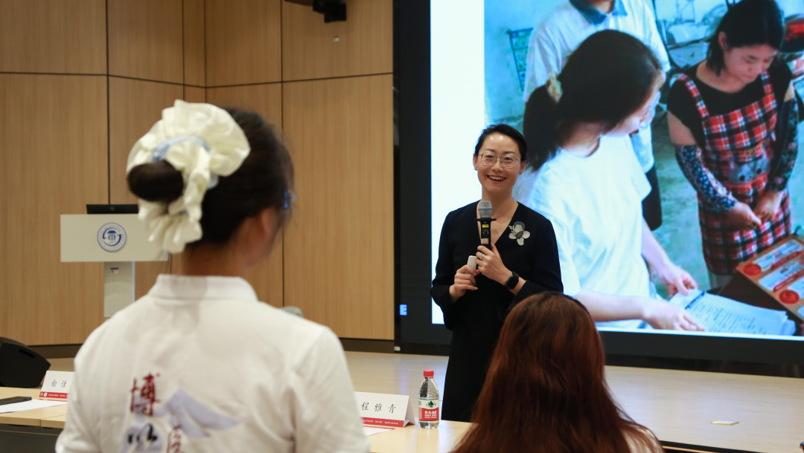
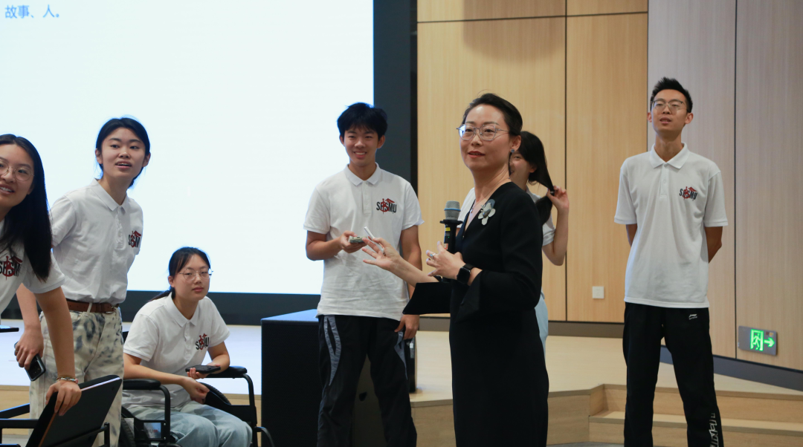
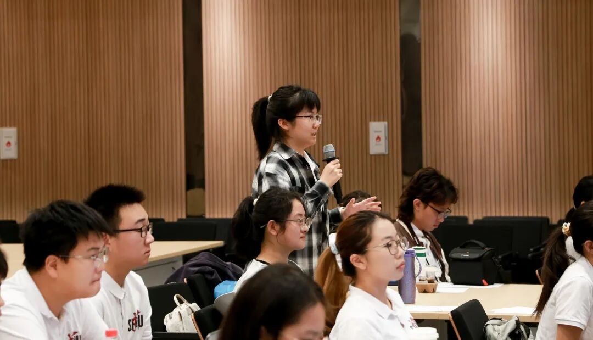
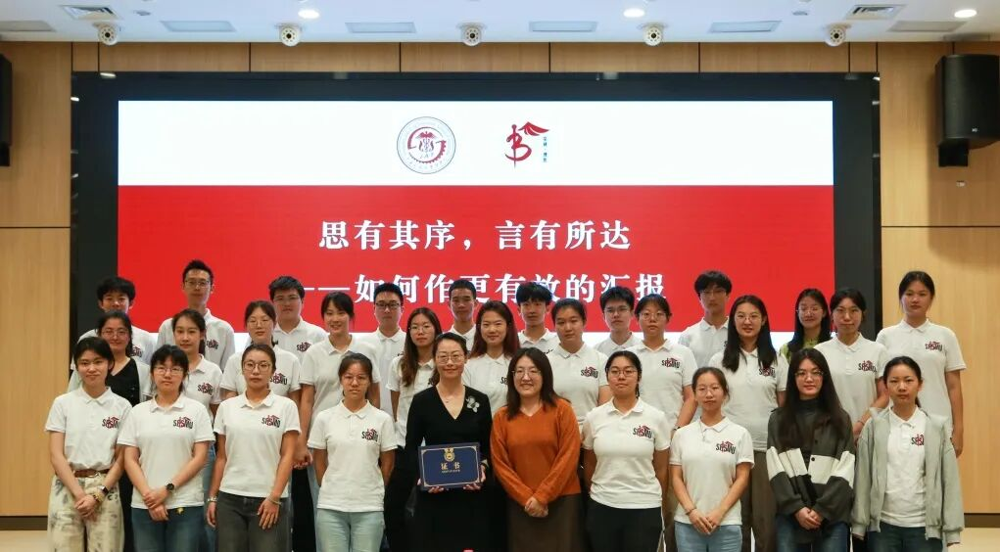

博医工作坊
博医工作坊是由上海交通大学医学院“荣昶-博医”卓越医学生培养计划推出的致力于提升学员综合能力的系列课程，通过优秀青年教师及学生骨干授课，给予学员切实有效的经验指导，以期提升学员领导力、沟通演讲、时间管理、数据分析、媒体运营传播等相关综合素质能力。
10月11日上午，上海交通大学医学院“荣昶-博医”卓越医学生培养计划（以下简称“博医计划”）五期博医工作坊在浦东校区学生活动中心319顺利举行。本期工作坊以“思有其序，言有所达——如何作更有效的汇报”为主题，特邀上海广播电视台播音指导、上海新闻广播FM93.4《活过100岁》节目主持人李宁老师主讲，活动由博医计划五期学员张琬欣主持。

模拟汇报，以练促学
活动伊始，博医计划五期实践组组长张昕媛带来“博学精技育良才，匠心帮扶造生机”暑期社会实践成果模拟汇报。她围绕实践背景、调研走访与科普活动，介绍团队暑期实践的经历与收获，为后续的讲稿点评和表达训练提供了具体素材。

现场教学，有据有序

李宁老师以这份模拟汇报为切入点，指出实践汇报最重要的是把真实的现场带给听众。她结合稿件和实践照片，追问同学们遇到了谁、听到了哪句话、记住了什么细节，示范如何把笼统的概括改成具体的人物、动作和场景。她强调，每一个判断都应有证据支撑；讲清一次访谈中发生的事，比泛泛地说“收获很多”更能呈现实践的价值。

为了让同学们亲自体会如何挖掘素材，李宁老师邀请大家选出一张印象深刻的照片，轮换搭档讲述照片背后的故事。随后，她从同学们分享的经历中提炼共同问题，示范如何把零散的见闻串成一条清晰的线索，并介绍ORID框架：从看到的事实出发，讲述自己的感受，分析背后的原因，最后提出行动或决定。通过这一练习，同学们进一步理解了如何让汇报既有现场感，也有思考和条理。

在此基础上，李宁老师将话题延伸到医学创新项目的路演。她结合多个项目案例，示范如何用贴近日常经验的提问、故事和比喻，让听众先理解问题，再了解技术方案。她提醒大家重视开场的前30秒，讲清项目要解决谁的困难、为什么值得关注，避免用密集的数据和专业术语淹没重点。PPT可以展示项目背景，口头讲述则应突出最能体现项目价值的内容。
交流答疑，明确重点
在提问交流环节，同学们围绕照片故事如何串联、专业内容如何讲得通俗，以及五分钟汇报如何取舍等问题请教。李宁老师建议，先由团队共同整理照片、访谈和观察，再从中寻找能够围绕同一问题展开的素材；汇报前应了解听众的专业背景，据此调整解释的深度。面对时间限制，她强调先想清楚最希望听众记住什么，将最有价值、最能体现自身特色的内容讲透，其余成果可以列在PPT上，不必逐项展开。她鼓励同学们在反复练习中学会选择重点，让有限的时间承载清晰的表达。

活动最后，李宁老师与全体同学合影留念，定格下这场收获满满的交流时光。“思有其序，言有所达”，既是对汇报表达的要求，也是一种值得持续训练的思考习惯。希望博医学子从下一次汇报开始，到现场去、把现场带回来，把今天学到的方法真正落实到具体实践中。

学员感想
关于博医
上海交通大学医学院“荣昶-博医”卓越医学生培养计划是上海交通大学医学院在上海荣昶公益基金会的支持下决定开展，具体由共青团上海交通大学医学院委员会组织实施的培养计划。该计划以践行有灵魂的卓越医学创新人才培养为理念，发挥上海交通大学医学院在医学教育及医疗卫生服务领域的综合优势，聚焦面向未来的卫生健康领导力，培养具有人文素养、创新思维、家国情怀、领袖气质、全球视野的高层次“医+X”卓越医学创新人才，担负起健康中国建设使命。
摄影丨博医计划五期学员 25级临五 张家羽
博医计划五期学员 25级法八 张文玥
文案丨博医计划五期学员 25级临五 王鑫迪
排版丨博医计划五期学员 25级临八 闫某好